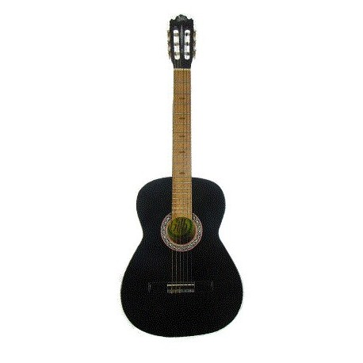
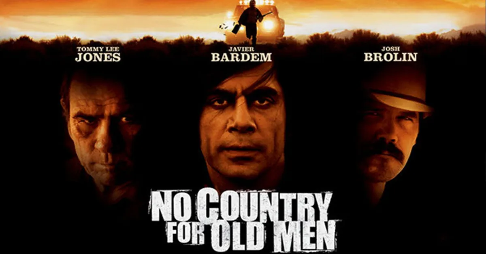
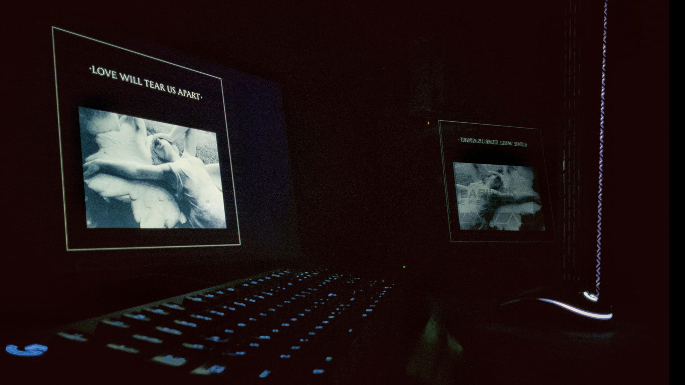

Correo electrónico: gibhramc@gmail.com
Redes sociales:
De los primeros pasatiempos que genere fue tocar la guitarra y apesar de que ya no lo hago tna seguido, aun sigo teniendop cierta fasinación por tocar ciertas canciones que aun recuerdo.
Desde una edad muy temprana, genere un hobbi por el septimo arte que hasta el día de hoy me acompaña.
La fotografia fue el ultimo pasatiempo que adquiri en la universidad y ha sido la forma de expresarme durante los ultimos años.
